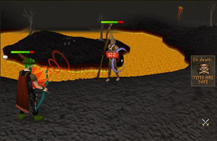
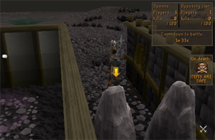

")
Clan Wars
Introduction | Location | Requirements | Recommended Items
Going to War | Rewards | The Free-for-all Arenas | Development Team
Going to War | Rewards | The Free-for-all Arenas | Development Team
Clan Wars is available to all players, both free and Members.
Depending on the settings chosen, if you die during this activity, it is possible that you will lose your items.
Please note that this activity is located in the Wilderness. Be aware that you may have to face some vicious beasts (including revenants!) in order to reach Clan Wars. For more information about the dangers of the Wilderness, please read the Wilderness Area Guide.
Introduction

Clan Wars is the answer to your desires, giving your clan the chance to prove its superiority over others in epic battles.
Location

To get to the Clan Wars challenge hall, you will need to walk north from Varrock and around the fiery lava that surrounds the Chaos Temple. Walk north-east from there and you should find it quickly.
If you have access to Ancient Magicks, you will find that the Carrallangar teleport drops you conveniently at the volcano. It's a fairly short run across a stretch of the Wilderness to then get to the Clan Wars challenge hall. Be aware, though, that you might just run into some nasty creatures while you do so.
Simpler still, you can use a games necklace to teleport directly to the Clan Wars challenge hall.
The challenge hall itself does not count as part of the Wilderness, so the easiest way to leave is to simply teleport out to some safer location. For this reason, it's probably a good idea to bring some method of teleporting.
Requirements
If you wish to initiate a clan war or accept a clan war challenge, you must be ranked as a captain or higher in your clan chat channel.
If you are not a member of a clan, or simply want to take part in a grand battle, you can enter one of the free-for-all arenas and enjoy an endless battle.
Recommended Items
![[image: Snipe prime targets]](../../img/main/kbase/minigames/clanwars/cool_warrior.gif) Probably the most useful piece of equipment will be a wilderness cape so you will know your friends from your enemies with ease. You should try to make sure everyone in your clan has the same cape to make identification simpler. Conveniently enough, one of the Wilderness cape sellers, Larry, has come to enjoy the comfort of the Clan Wars challenge hall, so it's a simple matter to purchase one from him.
Probably the most useful piece of equipment will be a wilderness cape so you will know your friends from your enemies with ease. You should try to make sure everyone in your clan has the same cape to make identification simpler. Conveniently enough, one of the Wilderness cape sellers, Larry, has come to enjoy the comfort of the Clan Wars challenge hall, so it's a simple matter to purchase one from him.
Since you are representing the pride and power of your clan, and to give yourself and your clan the best chance of winning, it is useful to field the best arms and armour that you can.
You should try to pick out a role for yourself, where you can perform useful functions for your clan. What works best for you and your clan is something you'll find out as you fight in more clan wars.
If you need to swap some equipment over or make other preparations for the imminent battle, the closest banker is at the volcano, just to the west. This does require a trip across a stretch of the Wilderness, however, so be prepared!
Going to War
To begin a clan war

To accept the clan war
If you are of a suitable rank in an active clan chat channel and a dastardly foe of suitable rank challenges you to a clan war, you will receive a message stating this in your chat window.
At this point, you can click on the challenge in your chat or right-click on the other player and select 'Challenge' to accept, or simply ignore it and wait for another challenge.

Victory
- Knock-out
The arena will be closed as soon as the battle begins. Additional players may not enter, and existing players may not return to the battle if they leave or die. The battle ends when one clan has defeated all the enemy players. - Kill-count
The arena is open, so additional players may enter at any time during the battle. The battle ends when one team's kill-count reaches the value you decide upon. The target value has a number of options, ranging from 25 to 10,000. - Most kills at end
The arena is open, so additional players may enter at any time during the battle. The battle ends when the time limit is reached, at which time the team with the higher kill-count is declared victorious.
Stragglers
- Ignore 5
If you prefer not to spend time hunting down the last handful of opponents, who may have an awful lot of run energy and a fear of death, you can set the war to end when one clan has only 5 members left. - Kill 'em all
For a truly dominating victory, you will have to kill every last member of the opposing clan or wait for them to leave the arena.
Time limit
- You can choose to have a time limit between 5 minutes and 8 hours, or no time limit at all. A clan war will always end if a clan is reduced to no members if Kill 'em all is selected as the victory condition, or when one has 5 or fewer members if Ignore 5 has been chosen. If the time limit is reached, the winner will be determined as follows:
If the battle is a knock-out match, the clan with the most survivors will be declared victorious.
If the battle allows run-ins, the clan with the highest kill-count will be declared victorious.
On death...
- ...you keep your items
If this option is turned on, you will retain all of your items when you die. - ...you lose your items
If this option is turned on, you will drop all of your items if you die, holding onto your most expensive item if you have the Protect Item prayer active. Beware! There are no gravestones in Clan Wars challenges. Furthermore, you will not be able to retrieve your dropped stuff, so don't take anything that you're not prepared to lose. In such matches, you may be able to collect some of your defeated foes' items - food, potions, runes and other ammunition - assuming you can use them in the current battle (so you can't pick up food if its use has been disabled, for instance). Any such drops will affect your trade limit, as well as your victim's trade limit.
Combat rules
- Melee
- Magic - can be set on (all spells allowed), standard spellbook only, Bind/Snare/Entangle only, or off
- Ranged
- Prayer
- Summoning
- Food
- Potions
Arena
- You can select the arena in which you will fight. Some arenas may have advantages for certain combat styles, so it's good idea to check which one you will be fighting in.
Upon accepting a challenge, both yourself and the challenger will be teleported into the arena, on the side assigned to your clan.
Preparation phase
To take part in a clan warIf you're in an active clan chat channel, when one of your clan officers initiates a clan war on the same world as you, you will receive a message in your clan chat telling you that a war has been declared.
You will then have two minutes to arm yourself and enter a portal in the Clan Wars challenge hall in order to take part in the war.
Before the battle begins, the Clan Wars arena is divided into two separate areas by a huge wall from east to west. This wall keeps the clans apart until preparation is finished; you can use your Clan Chat channels to plan your team strategies and tactics and get into positions ready for the outbreak of the war phase.
Note that there is no minimum number of players required to fight in a clan war, and everyone in your clan chat channel can join in. Your battle could be just between you and a private nemesis, or between two armies!
It is possible for a clan to be taking part in multiple and simultaneous clan wars on different worlds.
War phase

Depending on the settings chosen, players entering after the battle has begun may be placed in the viewing area to watch the fight or allowed to join the battle.
If you are not in a clan when you enter the portal, you will be asked if you wish to view a specific battle, or simply any battle. If you know of a clan war in progress, you can type in the name of one of your friends who is currently in a clan war. If you are simply interested in war for its own sake, you can be shown a random battle currently in progress. You will then be teleported into the viewing area and allowed to view the war.
At this point, it is a fight to the death for each clan, the idea being to eliminate all of the opposing clan's fighters before all of your clan's soldiers are slain. Superior equipment, tactics and good teamwork may allow a smaller clan to overcome a larger, less organised one, so it's not just numbers that count.
You can keep track of how many foes your clan must defeat and how long the battle might run for by looking at the interface in the top-right corner of your screen.
Post-war phase
When one clan is finally defeated, the surviving clan is declared the victor and all players will be returned to the challenge hall.
Rewards
The glory of victory in a clan war is its own reward!
The Free-for-all Arenas

The white portal will take you to an arena of endless battle, in which you will not lose any items if you die. The red portal will take you to a different arena, but you will lose your items if you die. There are no gravestones in the dangerous arena, so it is probably safer to only take items you are not especially attached to.
In the dangerous free-for-all arena, you may be able to collect some of your defeated foes' items - food, potions, runes and other ammunition. Any such drops will affect your trade limit, as well as your victim's trade limit.
Both free-for-all arenas have a 'non-combat zone' at the southern end of the arena, so you will be able to prepare yourself when you arrive.
Development Team
| Rework | |||
| Developer: | Greg V | Developer: | Ashleigh B |
| QA: | John H, Dan G, Kevin D | QA: | Dan G, Dan O'R, |
| Graphics: | Damian C, Daniel J | Graphics: | Mark C, Lluis A P, Kavi M, |
| Audio: | Adam B | Audio: | Adam B |

More articles in
Activities
|
|
|
Further Help
If this article does not help you, you may find the following sections of the RuneScape site helpful:
|
|